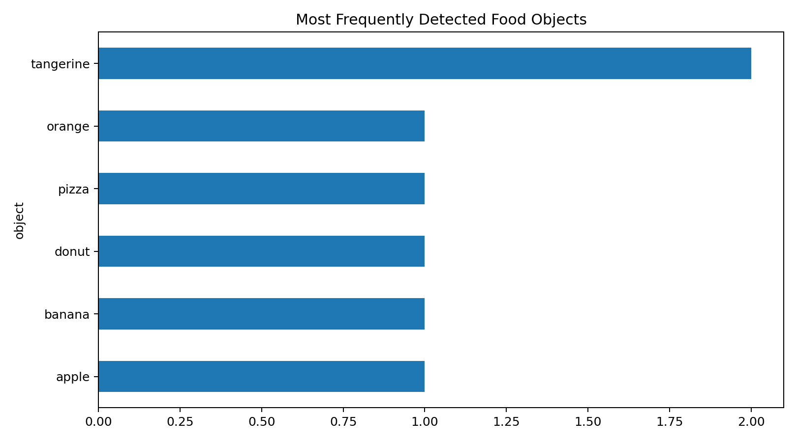
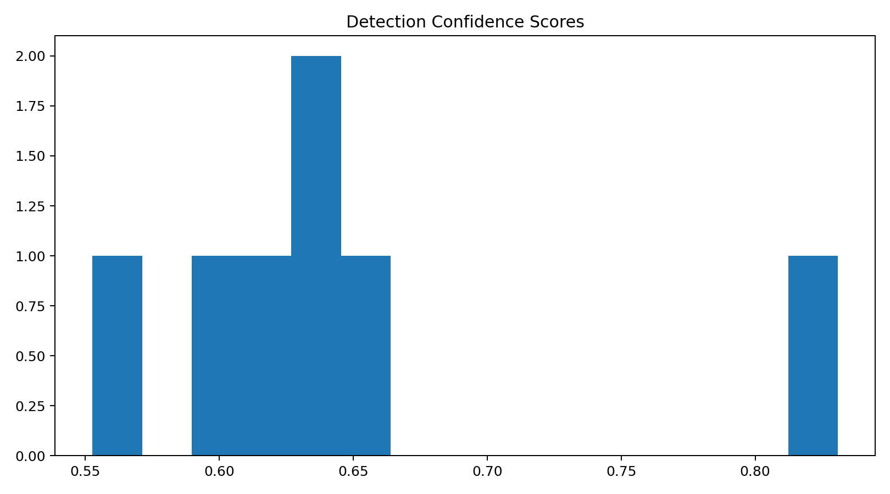
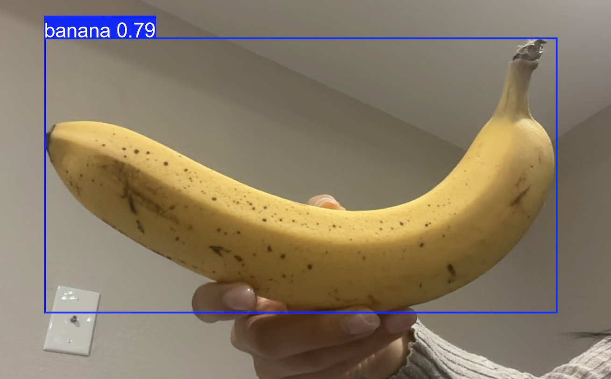

This project uses YOLO-World, an open-vocabulary object detection model, to detect food-related objects from images and a live webcam feed. The test dataset uses simple single-food images, such as an apple, banana, donut, pizza, and orange, so the model can focus on clear food objects instead of mixed bowls or cluttered meal scenes.
The dataset is controlled using a CSV image manifest. Each row contains an image ID, image source, and description. For this version, I selected images with one main food object at a time to improve detection clarity.
data/image_manifest.csv food_classes.txt
image_id,source,description
apple,data/images/apple.jpg,Single apple
banana,data/images/banana.jpg,Single banana
donut,data/images/donut.jpg,Single donut
pizza,data/images/pizza.jpg,One pizza slice
orange,data/images/orange.jpg,Single orange
Instead of using the images blindly, I converted YOLO's raw outputs into structured features: object label, confidence score, bounding box coordinates, and bounding box area. I also used a confidence threshold to filter weak predictions.
food_classes.txt.reports/detections.csv.Model: YOLO-World v2 medium, an open-vocabulary object detector that can detect custom food labels. The model is measured using total detections, average confidence score, detected object counts, and the distribution of confidence scores across the image dataset.


| Object | Confidence | Output |
|---|---|---|
| apple | 0.82 | bounding box |
| banana | 0.87 | bounding box |
| donut | 0.79 | bounding box |
| pizza | 0.84 | bounding box |
| orange | 0.76 | bounding box |
This project can also run on a webcam. Because this is a static portfolio page, the camera does not open directly inside the browser. To try the live demo, run the command below in Terminal.

python src/camera_food_detection.py
This opens your computer camera and detects food-related objects live using the labels from food_classes.txt.
Press q in the camera window or use Control + C in Terminal to stop it.
python3 -m venv .venv
source .venv/bin/activate
pip install -r requirements.txt
python src/run_detection.py --manifest data/image_manifest.csv --model yolov8m-worldv2.pt --conf 0.55
python src/camera_food_detection.py
python -m http.server 8000 --directory docs
Open http://localhost:8000/